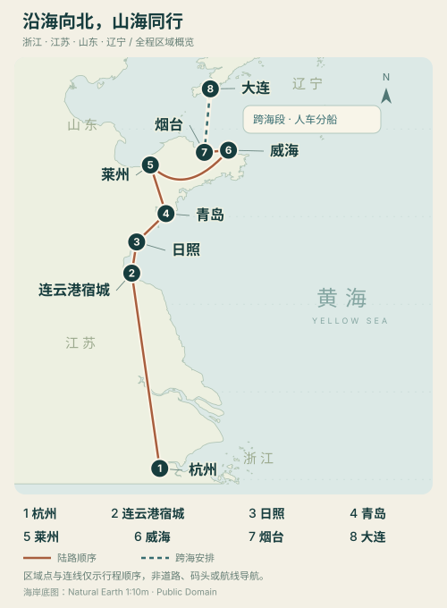

01
01 / 出发
从熟悉的城市，驶向一家人的假期。
西湖的水色留在身后，前方是山、海，还有等着相聚的家人。路上安排好休息，第一晚只需安心抵达。
D1 · 一家三口出发 ↗山间的小院、胶东的海风、海的另一边。先接上家人，再把这些风景慢慢看进记忆里。10个人的旅行，有宝宝的笑声，也有外婆坐下来歇脚的时光。
从小院的晚风，到海边的日落。
风景慢慢看，日子一起过。
点击照片可放大。风光与房间实景用于了解目的地；可选景点不必全部走完，酒店照片也不代表已订房型。每天的安排和无障碍条件见后文。
西湖的水色留在身后，前方是山、海，还有等着相聚的家人。路上安排好休息，第一晚只需安心抵达。
D1 · 一家三口出发 ↗在宿城停一晚，让长途驾驶有一个温柔的收尾。第二天看天气和宝宝精神，挑一段山海风景，再慢慢去日照。
D1—D2 · 宿城与海上云台山 ↗宝宝有一段认真玩沙的时间，大人也有坐下看海的空闲。乐园与海边择一慢玩，接站日早点出发。
D2—D3 · 海滨休息，准时接站 ↗先到车站接人，再一起吃顿饭。海边的红瓦、城市的天际线和博物馆里的故事，挑大家都舒服的一段看。
D3—D4 · 29日14:34青岛站会合 ↗城区歇脚、家人团聚，再按当天状态选择海岸或地方文化。这里不用赶景点，有一餐好好坐在一起吃的饭，就很值得。
D5 · 先完成必须的事，再选短游 ↗找一段平整的滨海步道，给外婆留休息的位置，给宝宝留看海的兴致。刘公岛、荣成是可选分支，按体力与通行条件取舍。
D6—D7 · 市区慢游，上岛有条件 ↗海边城市值得短暂停留，但今天最重要的是住好、吃好、休息好。人和车各自确认好行程，再从容向大连出发。
D8—D9 · 先确认承运，再跨海 ↗把星海湾、东港和亲子场馆各留成一个从容的选择。家属优先按期回杭州，随后你取到车，按最快高速回杭州。
D9—D11 · 家属返杭优先，7号收束 ↗
家属最迟2026年10月7日到达杭州，你带车返杭可以晚些。本版家属行程按11天安排，到太太、宝宝和妈妈最迟7号抵杭收束；随后你只开车走最快高速返杭。日期已确认：2026年9月27日出发、9月29日接站、10月7日家属到杭。7号之后其他亲属自行决定行程，本路书不再安排，也不追加你的游玩日。
29 日家人乘 G881 到青岛站，14:34 到达；你开车到站接人。理想MEGA纯电车需要带到大连；你提供的续航约500公里，用于初步规划，不按一次跑满500公里安排。太太、孩子和妈妈最迟10月7号到杭州；你带车返杭日期自由。青岛会合后按10人规划，外婆需要轮椅/无台阶动线。
家属是否一定去大连、名单中未明确的一位、车辆年款与行驶证核定座位、轮椅能否折叠及转移乘车、莱州目的与预算。G881 接站按你提供的信息及匹配日期查询保留，其他游玩时段为建议。本项目尚未代订后续交通与住宿，已有订单请另行核对。
已确认：2026年9月27日出发，9月29日接站，10月7日家属抵杭。天气数据固定对应这组日期。
| 日序 / 日期 | 目的地与重点 | 过夜安排 |
|---|---|---|
| D019月27日 | 杭州 → 宿城 杭州一家三口出发，服务区休息后入住 ↗ | 宿城 · 第 1 晚 |
| D029月28日 | 宿城 → 日照 5岁宝宝短时玩一项，海上云台山可删 ↗ | 日照 · 第 1 晚 |
| D039月29日 | 日照 → 青岛站 13:30停好车接站；全团10人按合规座位分车 ↗ | 青岛 · 第 1 晚 |
| D049月30日 | 青岛 一个短时主项目＋午休；少台阶多坐下 ↗ | 青岛 · 第 2 晚 |
| D0510月1日 | 青岛 → 莱州 半天转场＋探亲/午休，城区短停可删 ↗ | 莱州 · 第 1 晚 |
| D0610月2日 | 莱州 → 威海 上午收尾＋半天转场；长者宝宝先休息 ↗ | 威海市区 · 第 1 晚 |
| D0710月3日 | 威海（市区无障碍短线） 博物馆短线优先；刘公岛只作有条件替代 ↗ | 威海市区 · 第 2 晚 |
| D0810月4日 | 威海 → 烟台 先确认适老登船与家属返杭，再决定跨海 ↗ | 烟台 · 港口确定后选酒店 |
| D0910月5日 | 烟台 ⇢ 大连 拟10月5号跨海；无法确认则家属改山东返杭 ↗ | 大连 · 第 1 晚；停航则家属留山东 |
| D1010月6日 | 大连（家属返程前） 自然博物馆短线；动物园仅自愿分组 ↗ | 主方案大连 · 第 2 晚；可优先6号晚抵杭 |
| D1110月7日 | 太太、5岁宝宝、60岁妈妈 → 杭州 确认三名家属抵杭；你取到车后最快高速返杭 ↗ | 太太、宝宝、妈妈回到杭州；全团路书收束 |
青岛接站后留一个完整轻游日，莱州一晚、威海两晚；4日烟台做准备，5日过海，6日大连。家属7日白天返杭，你取到车后走最快高速返杭。
优先比较6日已到杭州的返程，更能给航空延误留余量；代价是大连要缩为到达后的轻游。若按7日飞，选择当天较早到杭州的航班，不能把末班当首选。
保留青岛、莱州、威海更宽松的游玩，家属从山东在6日或最迟7日到杭州；你带车完成大连段后，按实时导航走最快高速返杭。
这样不必为了全员到大连压缩山东，也更少受渡海影响。两套都保留，待确定家属是否一定去大连后选择。
北京南 → 青岛站
你负责开车接站
已按 2026 年 9 月 29 日查询 12306，终到站为“青岛”、到达 14:34；与你给的车次及时间一致。日期已确认；出行日期变化时须重新核票面，临行查正晚点。12306 · G881 本次查询（2026-09-29） ↗
风险较大时更稳的替代：若前一晚已看到次日严重路况/天气风险，可与酒店确认退改后提前住到青岛；将日照度假时间缩短，保证接站。
2026年9月27日—10月7日 · 11天、8座城市。杭州 → 连云港宿城 → 日照 → 青岛 → 莱州 → 威海 → 烟台 ⇢ 大连 → 家属返杭。转场日同时看两地，海上那一段另外看风浪。
正在获取全程天气；连接成功前显示2026年9月20日备用快照。
天气随预报更新：联网时自动向Open-Meteo获取各城市预报；打开页面、停留每15分钟或返回页面且缓存过期时检查。天气源按其模型周期更新，页面同步不是秒级实况。未发布或不完整的日期显示“待发布”，日期进入范围后自动补齐。更新失败保留上次数据并标注时间；无缓存时才用9月20日备用快照。温度是当日最低—最高，天气类型代表当日可能出现的主要情况，不代表全天如此。远期结果只作趋势，临行再查逐小时预报。
天气数据：Open-Meteo · CC BY 4.0。中文整理、四舍五入和穿衣建议由路书生成；各城中国天气网链接保留在下方，便于交叉核对。首次打开需联网同步，浏览器缓存仅保存在当前设备。
日历已调整：本章天气仍对应2026年9月27日—10月7日原计划，各卡片日期不会随日历移动。请按新日期重新查天气。
出发与抵达，两地都看。每个转场日同时显示两座城市，穿衣提示也随新预报调整；最低、最高温不能当成你正好出门时的气温。服务区、山地和海岸另看当地实况。
胶东到大连，防风层随身。海边、码头和船舱的体感不同。给外婆备可脱保暖层和腿毯，宝宝备干衣；天气接口显示的城市风速不代表海面风浪或开航许可。
杭州 → 连云港宿城
宿城 / 海上云台山 → 日照
日照 → 青岛站 · 14:34接G881
青岛 · 轻松城市日
青岛 → 莱州
莱州 → 威海
威海 · 市区轻游 / 条件合适再上岛
威海 → 烟台 · 过海准备
烟台 ⇢ 大连 · 人车运输分开核对
大连 · 轻游 / 3位家属优先提前返杭
大连 → 杭州 · 太太、宝宝、妈妈最迟到家
这些是城市参考点。宿城山间、海上云台山景区、海边和高速沿线可能与城区不同；不能把两座城市的天气当成整段高速路况。9/26晚按实际导航核查杭州—苏北沿线预警，之后每次跨城出发前查沿途雨区、能见度与交通管制。
若临时去荣成或西霞口，另查当地预报；不直接套用威海市区数值。岛上项目还要核对景区船务与开放状态。
本页城市天气自动更新，但不能据此判断10/5能否开航。10/3—4及5日出发前，核对渤海海峡、黄海北部相关海域风、浪与能见度，并向实际承运方确认客船和运车船运行、报到截止与两端港口。
城市“小于3级风”不等于海面同样风力。停航或延误时，太太、宝宝、妈妈的10/7抵杭期限优先；必要时留山东返杭，不等车。
城市天气在页面打开时自动同步；海况、停航、票务与景区开放仍须在上述节点单独核对。修改日期输入框只试排日历，不改既定天气日期。
连云港城区用于宿城区域趋势参考；具体山地与海边查当地更新。本地项目保留原始快照供核对；自动天气与该快照来源不同，比较时以页面标明的来源、日期和最近同步时间为准。
按整段旅程的冷暖收拾行李。9月27日至10月7日，要一起照顾杭州、连云港宿城、日照、青岛、莱州、威海、烟台、大连，以及抵杭当天的冷暖变化。每个人准备能拆开穿的薄层，海边与候船的防风层放在随手可拿的位置。
分层思路参考中国天气网：洋葱式穿搭；该文的天气描述针对9月17—19日，本路书仅采用其穿衣方法，不把那几天的预报挪到旅行日期。
青岛、莱州滨海、威海、烟台港和大连都要多看一眼风与降雨。暖和的午后也不等于日落、码头排队或甲板上同样舒服；风会加快散热，衣服潮湿后更应尽快换干。
风大或冷雨时：先换短时、避风的活动，进室内休息；不是越穿越厚就能继续所有海边项目。外婆和宝宝无需陪大家在风口等拍照。
不拿岸上天气替代海况：上船仍看航司、海事与港口通知。增加衣服无法解决停航或不适合登船的问题。
穿衣应结合气温、天气、湿度及风，见中国天气网穿衣指数说明。风与散热机制见NWS 风寒说明；本路书不把冬季风寒公式套算成此次旅程的“海边体感温度”。
| 如果当天遇到 | 普通成人 | 5岁宝宝 | 80岁轮椅外婆 |
|---|---|---|---|
| 24℃以上，晴或少云、风小 | 短袖或薄长袖＋轻便长裤；防风层随包带。阳光强时带遮阳帽，避开长时间暴晒。 | 轻薄上衣，按冷热随时调整；带一套干衣和干袜，跑动后不继续穿汗湿衣服。 | 舒服的薄上衣＋长裤，薄开衫在手边。不要因为“长者怕冷”就在暖和时一味捂厚。 |
| 18—23℃，早晚稍凉 | 薄长袖＋可脱的薄外套；晴暖午后可脱外层。 | 薄长袖＋开衫/薄抓绒，根据活动和孩子感受穿脱；不固定比成人多穿几件。 | 薄长袖＋容易穿脱的开衫，腿毯按需盖；坐在海边时另加防风层。 |
| 12—17℃，或阴天体感偏凉 | 薄长袖＋抓绒/针织层＋防风外套，长裤和包脚鞋。 | 薄长袖＋保暖中层＋防风外层；上车前脱掉影响安全带贴合的蓬松外套。 | 长袖＋保暖中层＋防风层，长裤、干袜、包脚鞋；腿毯随行，安排室内歇脚。 |
| 低于12℃，或明显降温 | 在上面组合中加轻量保暖层；按实际需要增加内搭裤、帽子和薄手套，减少风口停留。 | 使用备用保暖层，换更短的户外项目；冷、衣服湿或不舒服时回室内，不以“都来了”为由硬撑。 | 优先温暖室内项目；备用轻量羽绒/棉服、帽子和腿毯用于必要接驳，尽量减少户外等待。 |
| 下雨／海风明显／候船较久可与以上任一温度同时发生 | 防雨外层、抓地合适的包脚鞋；干袜单独防水装。大风时不以撑伞作为唯一防护。 | 合身雨衣＋备用干衣；不安排湿滑礁石、风口和贴海浪活动，转室内。 | 适配轮椅的防雨罩/雨披，确保脸部通风、视线和车轮不受影响；有干腿毯可换，优先有顶棚接驳。 |
下表为每人数量，已经包含出发当天穿的一套。按9月30日前后在青岛、10月3日前后在威海各安排一次洗衣估算；先问酒店洗烘条件和取衣时间，跨城前别留下未取衣物。若洗烘无法落实，内衣袜子增加到覆盖实际未洗的天数，宝宝另留备用。数量可按每个人习惯微调，不要求买新衣。
| 衣物 | 成人每人 | 5岁宝宝 | 轮椅外婆 |
|---|---|---|---|
| 贴身上衣 | 短袖2件＋薄长袖3件 | 短袖3件＋薄长袖4件 | 薄上衣5件，以长袖为主，可留1件短袖 |
| 裤子 | 长裤3条，至少1条方便坐车 | 长裤5条，方便活动和更换 | 柔软长裤3条，腰部舒适、便于照护 |
| 保暖中层 | 薄抓绒/开衫1件；怕冷者可多1件 | 薄抓绒/开衫2件，方便洗换 | 开衫/薄抓绒2件，避免全部为紧身套头款 |
| 防风防雨外层 | 1件，外加轻便雨具 | 1件防风外套＋合身雨衣1件 | 易穿脱防风外套1件＋适配轮椅雨具1套 |
| 降温备用 | 轻量羽绒/棉服1件，可压缩收纳；是否加入由临行北段预报决定 | 轻量保暖外套1件；不在车内安全带下穿蓬松厚款 | 轻量保暖外套1件，放易拿位置；不等感觉冷了才从行李底部翻找 |
| 内衣、袜子 | 内裤6条、袜子6双 | 内裤8条、袜子8双，其中1套单独放随身包 | 内衣按个人需要；内裤6—7条、袜子6—7双，预留干爽替换 |
| 睡衣 | 1套；希望洗换可带2套 | 2套 | 2套，便于穿脱 |
| 鞋与小物 | 熟悉的步行鞋1双＋备用鞋1双；遮阳帽1顶 | 穿惯的包脚鞋2双；帽子1顶 | 舒适包脚鞋1双＋备用鞋1双；按需帽子、薄手套各1 |
| 额外保暖 | 小披毯可按家庭共用 | 轻便小毯1条，用于休息时加盖 | 轻便腿毯1条＋薄备用毯1条，防潮袋独立装 |
理想MEGA里用合适的儿童安全座椅，按座椅说明书固定。蓬松羽绒服、厚棉服不夹在孩子与约束带之间；先脱厚外套再扣好安全带，需要时把外套或毯子盖在已系好的约束带外面。车内变暖后再减掉盖层。
衣服厚度变了就重新检查带子贴合；不自行在孩子背后或带子下面塞厚垫。无论穿几层，安全带和座椅的实际使用要求优先。
依据美国儿科学会：儿童座椅与厚外套。这里采用其约束带安全原则，并非预测旅行时会出现冬季天气。
优先前开、宽松且不妨碍转移的衣物。出门时由陪护把腿毯、备用开衫和雨具一起拿走，别全留在另一辆车上。
毯边和雨披固定在远离轮胎、脚轮及地面的位置，避免拖地或卷入；不能遮挡陪护的视线、制动操作或外婆的呼吸。不要把轮椅包成不透气的封闭空间。
主动问外婆冷不冷、闷不闷，观察衣物有没有潮湿；她不必按步行者的体感穿衣。海风不舒服就进室内，短一点的海景停留同样值得。
| 日期与位置 | 当天重点拿在手上 | 谁要特别照顾 |
|---|---|---|
| 9/27 杭州→连云港宿城 | 薄长袖、防风外套、宝宝完整换洗1套。服务区休息时先按当地天气穿好再下车；抵宿城傍晚不只沿用杭州早晨的穿法。 | 杭州出发3人；孩子的换洗袋放乘员可取处。 |
| 9/28 宿城→日照 | 山海路线用便于活动的长裤和包脚鞋；海边另外带外层和干袜，湿沙后不穿湿鞋袜继续赶路。 | 宝宝海边备用衣，避免把唯一干衣一起弄湿。 |
| 9/29—9/30 青岛接站与游览 | 接站包放外婆开衫、腿毯、全团可随取的防风层。候车室、停车场和沿海步道分别按体感增减。 | 青岛站会合后10人；两辆车分别留本车乘员备用衣。 |
| 10/1 青岛→莱州 | 跨城长时间坐车穿舒适薄层；若到滨海点，出车前取出外套。不要在还没决定是否下海边时把外层托进酒店行李。 | 长辈和孩子方便穿脱，外婆腿毯随车。 |
| 10/2—10/3 莱州→威海、威海游览 | 防风外套是随身件；有岛上行程时携带干袜、雨具和保暖中层，候船也能用。天气条件不合适就留市区短线。 | 外婆与陪护使用同一随身包体系；宝宝活动后及时换汗湿上衣。 |
| 10/4 威海→烟台；10/5 烟台⇢大连 | 人车可能分船，把当天外套、干衣、睡衣、腿毯放进随人登船的小包，不可全留在车里。飞机组也保留一套手提换洗。 | 外婆与宝宝的保暖物各自随人；按承运方行李规定带，不假设途中可回车取物。 |
| 10/6 大连／优先返杭日 | 大连室外仍带防风层；准备返杭的3人把抵达杭州要穿的薄衣与干袜放随身行李，分段穿脱。 | 太太、宝宝、妈妈的衣物与驾驶员后续行李在前一晚分好。 |
| 10/7 太太、宝宝、妈妈抵达杭州 | 同时看出发城市与杭州落地时段天气。机场/车站用薄层，到达后再调整；防雨外层放随身包，不能只看北方出发地。 | 3人返杭包独立完整。其余人自行安排后续，不在本路书继续规划游玩。 |
硬约束：太太、孩子和妈妈必须在10月7号抵达杭州，不是7号才出发；你和车辆返杭日期自由。日期已确认：2026年9月27日—10月7日，不代表已订交通。能在6号晚抵杭更稳。
| 计划日期（2026年） | A · 家属同游大连 | B · 家属从山东先返杭 |
|---|---|---|
| 9/27—28 | 杭州→宿城→日照；长途抵达和度假休息为主。 | |
| 9/29 | 青岛接站、入住会合；保留接站缓冲。 | |
| 9/30 | 青岛完整游玩日，一个主项目加海滨散步。 | |
| 10/1—2 | 1号莱州；2号转威海，抵达后休息。 | |
| 10/3 | 全团优先城市无台阶轻线；刘公岛须先核全程无障碍，荣成仅自愿分组。 | |
| 10/4 | 烟台过海前一晚，完成车、客航次核验。 | 留山东，确认家属返杭票与送站安排。 |
| 10/5 | 车客安排均确认后过海至大连，入住休息。 | 家属在山东机动休整；你独自衔接大连。 |
| 10/6 | 大连一个主景区；若有合适交通，可缩成半天后返杭。 | 优先这天抵杭，7号保留为时间缓冲。 |
| 10/7 | 选择经核实能白天抵杭的交通；早上不再塞景点。 | 仅按已确认交通完成最晚抵杭，不临时等余票。 |
| 方案 | 采用条件 | 取舍 |
|---|---|---|
| A · 全家到大连 | 5号赴大连及6/7号返杭均可落实；轮椅外婆可与陪护直飞，不必随车走。 | 大连保留一个轻松主题，不能再叠加山地或大型园区；延误会压缩余量。 |
| B · 家属山东先返 | 更重返杭确定性，或跨海与返杭无法稳妥衔接。 | 家属放弃此次大连，你和车继续，不受7号约束。 |
按已确认日期，核对家属抵杭的最晚时间及可接受到达站点，再落实6号优先、7号备选的真实交通；把去机场或车站、安检、行李和中转都计入。压缩的是崂山和荣成加游，接站、港口核对和每日休息照留。
4号晚必须复核5号车、客各自航次：承运资格、受理港、报到截止、乘客出发地、预计到达地与运行状态，缺项就不把家属过海当成定案；5号出发前再查一次。
出现停航或明显延误，家属先走，不等车。若已到大连而返杭航班变化，立即查真实可售交通及总时长；不能宣称飞机取消就一定能高铁当天到杭州。尚未跨海时，应优先切换方案B。
太太、妈妈和孩子一起行动，儿童由太太全程照看。家属全部证件、必要行李、药品、换洗衣物和电源随身带走，不留在随车运输的行李中。
在酒店完成会合与交接：确认酒店入口、目的机场或车站、接送车辆、联系人及订单。你去港口时，家属使用独立正规接送；不安排你同时赶码头又赶机场。
家属抵杭后报平安；车辆到手且你休息充分后，按实时导航最快高速路线返杭，不再安排返向船期或游玩。其他亲属7号之后自行决定行程。
人数按9位成人＋1位5岁儿童预留：杭州出发为你、太太和宝宝3口，青岛再会合7人。名单记录为妈妈60岁、舅舅①65岁、舅舅②65岁、外婆80岁、姨妈60岁、姨夫70岁，另保留1位待补。订车订房按总共10人核容量，不补写尚未提供的姓名或关系。外婆需要轮椅或尽量无台阶路线，这是选车、住宿与景区动线的硬条件。
你本人开车接站，另约正规车辆，提前给双方同一车站、出口、停车位置和酒店地址。两辆车先停妥再会合，不让老人拖着箱子找移动的车。
配车示例：理想MEGA坐原3口＋妈妈，共4人，MEGA按行驶证核定座位与实际装载安排，前提是车辆核定座位、儿童座椅和行李空间允许；另外6人乘正规7座商务车，专业司机占1座。6名乘客坐满后还须装得下行李及轮椅；不足就升级合适9座车或增加车辆，不挤坐、不占通道。
先确认轮椅能否折叠及收起尺寸、外婆能否转移到汽车座椅；不能转移时，需正规可载轮椅无障碍车，不能保证普通MPV适用。长途备用12—15座中巴也要核实司机座位、行李与轮椅空间、上下车设施。车型、驾照和意愿未确认前，不安排老人驾驶。
优先5间：家庭房1间住2成人＋孩子；另外7成人用4间，可先按3间双床＋1间单住比较，再按亲属关系、照顾需要及本人意愿分配。家庭房允许人数和床型也须酒店确认。
若压成4间，家庭房之外的7位成人必须有一间酒店确认允许入住的真正三人房，另外两间住双人，并经所有相关成员同意；不能默认加床、拼床或超员入住。
请酒店实际确认下客点→大堂→电梯→房门→浴室的完整无台阶动线，以及门宽、轮椅转身空间、浴室扶手和洗浴条件；普通房有电梯不等于适合轮椅。优先近下客点、近电梯且安静的房间，尽量连住，少搬行李。
| 环节 | 同行约定 |
|---|---|
| 铁路或接驳 | 铁路组至少安排一位适合且愿意的成人陪外婆，负责行李、进出站与联络；孩子始终随父亲或母亲，不单独随另一组转运。 |
| 游览节奏 | 半天一个重点，先核实坡道、电梯、轮椅可达入口和洗手间，台阶、沙滩及碎石路另设替代。每20—30分钟有可休息选择只是规划节奏，非医学阈值；回酒店需约好陪同和交通。 |
| 返杭分组 | 太太、宝宝、妈妈3人一起行动，最迟10月7号抵杭；其他亲属7号之后自行决定行程，本路书不再安排。你取到车后走最快高速返杭州，不规划额外游玩。 |
每日出发前清点人数、证件和行李；两车各有联络人，同一个酒店会合。提前说明上下车帮助需求和不想参加的项目，让较慢的一组也有完整、轻松的一天。
杭州 → 连云港宿城
今天只负责抵达
第一天不赶着登山。高速北上，服务区吃饭、让孩子下车活动；到宿城，就安心住下。
海上云台山 → 日照
两段风景，一次转场
这段仍是一家三口。5岁宝宝按体力选短线，景区交通和开放入口先确认；不追加连岛。天气不好或孩子累了，可删去登山，早些到日照休息。
入住后，在幻想岛、室内水乐园和海边中按体力选一到两项。不为了玩完所有项目拖晚睡觉，把更多轻松时间留给孩子。
日照 → 青岛站
29 日 14:34 接 G881
森泊主要玩乐放在前一天下午。今天早餐后早出发，先到青岛站附近停好车，再等家人出站；沙滩只是有余量时的短停。
从一次相聚开始，
把下一段旅程，留给更远的海。
主表按尽量同游大连倒排：接站后青岛一个完整轻游日，再经莱州、威海和烟台；太太、宝宝、妈妈最迟10月7日到杭。7号之后其他亲属自行决定行程；你取到车后走最快高速返杭，不再追加游玩。全团以轮椅可达、短时活动为先。
全团按10人容量安排，两位65岁舅舅分别计入。外婆需要轮椅或尽量无台阶：海军博物馆先确认无障碍预约、入口、电梯与卫生间，优先适合轮椅的主展/地面展厅短看60—90分钟；舰艇舱梯不列全团路线。轮椅通道无法确认就换已核实可通行的短时室内活动。
全团在附近吃面食和清淡熟食，提前确认10人座位。13:00—15:30回酒店午休；外婆与宝宝不必等体力好的成员刷完展区才离开。
午休后若天气和状态合适，只在已核实平整、少台阶且有休息点的近酒店步道停留20—40分钟。老城石路、坡道、拥挤栈桥与礁石不默认轮椅好走；没有可靠通行信息就留酒店休息。
早点聚餐，检查轮椅是否能装车、酒店到餐厅是否有台阶，给外婆明确陪护与上下车协助。太太、宝宝、妈妈必须10月7号到杭州；其余亲属各自返程安排另行落实。
预订 / 取舍：人数按10人做容量预留，未明确成人留占位，不影响推进。外婆轮椅/少台阶为硬条件，全团不登山、不默认可进入舰艇舱梯；预约成功也需再次核实无障碍路线。
核验入口：海军博物馆 · 官方预约 ↗ · 青岛文旅 · 官方游览线路 ↗ · 青岛海底世界 · 官方入口 ↗
早餐退房后上午出发。全团按10人容量核清车辆座位、轮椅收纳、宝宝安全座椅与行李空间；自驾留半天含休息。铁路分组先核实站点电梯、辅助服务和轮椅换乘可行性，优先减少换乘；不把外婆交给复杂接续。
在莱州同一家酒店会合，先吃饭休息。铁路先到就有人陪同长者直接去酒店寄存、吃饭，不在车站久等，也不要求自驾组加速赶来。
14:00—16:00先留探亲、办事或午休。没有必须事项时，可在确认无台阶入口、电梯与卫生间后去市民之家博物馆短看45—60分钟；海岸只有轮椅可达的硬质步道才可短停，不安排外婆走沙滩。
城区聚餐，以面食和清淡熟食照顾孩子与妈妈。海鲜先确认计价、称重和加工费。确认明早是否还有必须事项，不能将未办完的事情默认为可顺延全家返程。
预订 / 取舍：先落实莱州实际停留目的和联系人空档。主线暂留1晚；新增停留必须同时重排后面的交通，不能把家属返杭期限顺延。
早餐后只做探亲办事收尾，或在酒店附近短走；压缩版不安排云峰山、大基山或其他台阶较多的全团游览。检查外婆与宝宝是否休息好，再决定出发。
11:30前后取行李、午餐后出发。途中按全车人的状态安排正规服务区休息，宝宝全程用安全座椅；不能以孩子睡着为由持续赶路。
威海抵达后办理入住、采购饮水和补给。铁路组按实际列车独立抵达威海站/威海北站，直接到酒店，不临时要求自驾组横穿城区接站。
酒店附近有平坦步道和休息座椅时短走20—30分钟即可。核实明日刘公岛的上下船台阶、候船距离、岛上接驳和休息条件，不能只看船是否开航。
预订 / 取舍：威海连住2晚，轮椅/少台阶已是硬条件。全团排除独立山地与需要长距离步行的大园区，轮椅无法通行的项目直接替换，不要求外婆勉强配合。
核验入口：莱州云峰山 · 官方名录 ↗ · 莱州大基山 · 官方名录 ↗ · 莱州博物馆 · 官方名录 ↗
默认选威海市博物馆45—90分钟短线，先确认无台阶入口、电梯、无障碍卫生间与休息位置。刘公岛仅在码头、上下船、乘客船舱、岛上景交、核心展厅和卫生间的轮椅通行均得到确认后才替换市区线；缺一环就不安排全团上岛。
市区就近吃饭并回酒店午休；若已确认后选择上岛，则在岛上安排可坐下休息且轮椅能到达的餐饮点。实际通行困难时联系工作人员协助，及时缩短游览。
市区线午休后仅在已确认轮椅可通行的酒店附近海滨短停；上岛组按返程船表提前返城。若全团另选荣成，只去已核实无台阶的近停车点看海，不走沙地，也不与刘公岛叠加。
酒店附近晚餐，准备明日去烟台。外婆和宝宝先休息，其余成员核对各自返程；太太、宝宝、妈妈7号抵杭的安排优先。
预订 / 取舍：默认城市轻线；刘公岛只有无障碍码头、船、景交、展厅及卫生间均确认才可选。荣成动物园仅供自愿成人分组，不要求外婆与宝宝同行。
核验入口：刘公岛 · 官方服务入口 ↗ · 刘公岛 · 2026 年船务说明 ↗ · 威海市博物馆 · 2026 年展陈信息 ↗ · 威海文旅 · 亲子线路 ↗ · 西霞口 · 运行与停航公告 ↗
早餐退房，前往已确认车辆受理港附近的烟台酒店。确认车型能承运、车与人分别坐哪条船，再确定明日跨海；不能仅凭普通客票判断理想MEGA纯电车也能受理。
入住或寄存、吃饭午休。按承运要求检查车况和电量；先核实太太、5岁宝宝、60岁妈妈的返杭交通，优先6号晚到，主方案7号白天到杭州。其余亲属另确认返程，不默认同一目的地。
除了车船、客船与两端港站，逐项确认外婆的轮椅上下船、乘客摆渡、客舱入口、卫生间和床位安排。必须有完整可执行的无台阶/辅助通行方案才考虑全员船行；再核查三名家属从山东返杭的备用交通。
若5号仍无法确认过海，太太、宝宝、妈妈从山东返杭，司机延后。若船舶轮椅环节无法保障，外婆与明确陪护可选择已核实辅助服务的飞机独立去大连或按本人意愿返程；不是让她在港口等司机。其他亲属依据各自交通安排分组。
预订 / 取舍：10人主线按80岁长者与5岁儿童降低强度；每位亲属确认是否继续大连、何时返程。出发日2026年9月27日已确认，5号/6号/7号均指10月；尚未代订车船机票。
核验入口：烟台港 · 2026 年新能源人车分船说明 ↗ · 渤海轮渡 · 官方购票与客服 ↗ · 烟台交通局 · 烟台南站停办客运提示 ↗
离开酒店前核实车型受理、车辆船、配套客船和家属返杭均可执行；全员乘船还必须确认外婆轮椅上下船、摆渡、客舱及卫生间通行有保障。若拟10月5号仍无法确认过海，太太、宝宝、妈妈走山东返杭备用；司机延后处理车。
按承运方要求留足受理、轮椅辅助和安检时间。外婆由明确成人陪护，宝宝也有照护分工；执行已确认的轮椅上下船和摆渡方案，不默认现场可以抬轮椅跨过台阶，不安排外婆爬上铺。司机按规定交车，乘客按配对安排登船。
抵达后按确定的取车港和时段办理；家属先到则先去同一家酒店，不用客船抵港时间推定车辆已可取。遇取车延迟，由司机处理，家属不陪着在港口久等。
大连只安排吃饭、洗澡、补觉。若实际夜航于次日到达，明日亲子日直接缩成恢复日；可以取消游玩，不能把家属7号抵杭推迟一天。
预订 / 取舍：大连亲子游是可删的体验，家属抵杭是硬约束。夜航、取车或延误占用次日时删景点，司机行程另排，不要求全员等车齐了才返杭。
核验入口：烟台港 · 2026 年新能源人车分船说明 ↗ · 渤海轮渡 · 官方购票与客服 ↗ · 海事局 · 船舶载运车辆安全规定 ↗
10月6号睡足后，默认大连自然博物馆45—90分钟短线，先确认轮椅入口、电梯、无障碍卫生间与休息位置；围绕宝宝喜欢的两三件展品即可。通行未确认则改酒店休整。森林动物园仅供自愿且体力合适的分组，不是全团路线。
就近吃饭午休，确认太太、宝宝、妈妈的返杭票面、证件、行李与接驳。若有合适的6号晚到杭州航班，优先采用，并提前结束游玩；其余亲属单独核对返程安排。
7号白天返杭主方案可在天气允许且轮椅可达的星海近停车点短停20—30分钟；不要求外婆穿行广场或走海岸长线。6号晚返杭则取消下午加项。自愿动物园组也需提前返回，不影响返程接驳。
主方案早早收拾休息，为明日返杭留足时间；若选择提前一天回，确认家属已经抵达杭州。只凭已登机或已发车不能记成已到杭州。
预订 / 取舍：太太、宝宝、妈妈必须7号实际到杭州，其他亲属返程尚未确认。优先6号晚返杭更稳；不得因让10人同时行动而放弃已经可行的返程。
核验入口：辽宁文旅 · 大连自然博物馆 ↗ · 辽宁文旅 · 大连森林动物园 ↗ · 铁路12306 · 时刻、余票与换乘 ↗ · 12306 · 中转换乘提示 ↗
按已确认票面提前出发，主方案选7号白天到杭州的航班；太太和妈妈照顾5岁宝宝，按需要落实行李和机场协助，不在出发前排景点。若6号已抵杭，今日在家休息。
家属抵杭后完成行李领取与地面接驳，报平安。你落实三名家属的独立返杭交通、取到车并休息充分后，即可按实时导航最快高速方案回杭州；不必为了等三人抵达而原地滞留。
本路书到三名家属最迟7号抵杭为止。其他亲属7号之后自行决定行程，不再在本路书安排；你的返杭只赶路，不新增游玩或固定日程。铁路返杭仍须以已核实7号可达的完整票面为准。
你不必追赶家属到家时间。走高速最快返程，必要的补能、用餐、休息与途中夜宿按实际进度决定，不再安排返向轮渡、景点或专门的停留城市。
预订 / 取舍：家属硬期限为2026年10月7日抵达杭州，日期已确认。优先比较10月6日已抵杭的交通，7日方案留足接驳和延误余量；若行程修改，须重查天气、交通与日序。
路书在太太、宝宝和妈妈最迟7号抵达杭州时收束。7号之后其他亲属自行决定行程，不再安排；你的返程只赶路，不增加游玩、固定日序或指定中途城市。
从车辆实际所在位置设置杭州最终目的地，出发前刷新路况，选择合法可行的最快高速路线。默认陆路返杭，不再倒排返向船期；不沿途打卡。
落实三名家属的独立返杭交通，车辆交接完成且休息充分后即可出发；家属到杭后报平安。快充补能、用餐、休息与必要夜宿按当天进度决定；不用追7号期限，也不以连续夜驾压缩时间。
本版团队有80岁轮椅外婆与5岁宝宝，全团优先无台阶短线。下列山地、长距离园区仅供部分成员分组选择，不能作为外婆默认动线。主线已排每天的核心活动。下表用来换选，不是在主线之外全部追加；所列时长是家庭游览建议，含休息时可能更久。
| 片区 | 优先推荐 / 适合谁 | 轻松替代与取舍 |
|---|---|---|
| 青岛 · 老城 | 海军博物馆适合对舰船、历史有兴趣的家庭，半天即可；栈桥、鲁迅公园选一段短走。预留预约和证件核查。 | 不想看军事展陈可选海底世界约半天。它在莱阳路，别与东部极地海洋景区混淆；大连已有海洋馆时不用两地重复。 |
| 青岛 · 山地与城市 | 愿意走路且天气合适，崂山九水/太清择一区；喜欢轻松节奏则八大关短走＋住宿区海边。 | 下雨时考虑已预约的啤酒博物馆；亲子看设备与工艺，司机不饮酒。不要山地半天再赶城西火车。 |
| 莱州 · 黄金海岸 | 金仓街道滨海片区，建议玩沙与松林散步60—90分钟，适合跨城后轻量放松。是否下水依开放管理与天气。 | 不进养殖区、作业码头或防波堤，不用赶海取代午休。大风时删海边，回城区用餐。官方介绍 |
| 莱州 · 两座山 | 大基山适合林地步行和历史故事，可按2—3小时短线；云峰山更适合对汉字、摩崖刻石有兴趣的学龄儿童，可按90—120分钟。 | 两座只选一座，问清当天入口和路况；不默认推车能全程走。只有一晚且要办事时，两座都可以删。莱州大基山 · 官方名录 ↗ 莱州云峰山 · 官方名录 ↗ |
| 莱州 · 室内文化 | 莱州市博物馆：西苑路5288号市民之家五楼，可按60—90分钟认识地方历史；先确认当日开馆。 | 面塑体验作为有预约再去的非遗候选，不承诺散客随到随做。带幼儿只选少量展品。莱州博物馆 · 官方名录 ↗ |
| 威海 · 城区优先，刘公岛有条件 | 刘公岛仅在码头、船舶、景区交通和厕所无障碍衔接确认后安排，给4—6小时弹性；城市散步在海源公园、国际海水浴场附近选择一片区，不连续跑完整条海岸。 | 火炬八街为顺路短停，车位紧张就删；刘公岛停航改市博物馆。沙滩开放不等于可以游泳。刘公岛 · 官方服务入口 ↗ 威海市博物馆 · 2026 年展陈信息 ↗ |
| 荣成 · 动物与海滨 | 神雕山动物世界适合能接受较长步行的家庭，预留一整天；偏轻松则那香海玩沙休息。 | 成山头只作天气体力都合适的加项；海驴岛需要另一天与开航条件。不要动物园、那香海、成山头、海驴岛一天全包。西霞口 · 运行与停航公告 ↗ 威海文旅 · 亲子线路 ↗ |
| 大连 · 西部亲子 | 自然博物馆＋星海片区适合第一天；森林动物园是另一整天主题。二者之间留足午睡和正常吃饭。 | 孩子喜欢海洋场馆，动物园日改老虎滩；老虎滩仍有户外动线，暴雨不硬去。辽宁文旅 · 大连自然博物馆 ↗ 辽宁文旅 · 大连森林动物园 ↗ 辽宁文旅 · 老虎滩海洋公园 ↗ |
| 大连 · 东西两端 | 东部：棒棰岛、东港选慢游；西南：旅顺适合历史兴趣。按住宿与到达港择一条线。 | 金石滩/发现王国需额外整天，且按年龄身高挑项目；旅顺与金石滩分处不同方向，不能在一个半日内拼接。 |
青岛预约与动线：海军博物馆 · 官方预约 ↗ 青岛海底世界 · 官方入口 ↗ 崂山九水 · 官方交通提示（2026-05） ↗ 青岛啤酒博物馆 · 2026 年分时预约公告 ↗。门票、房价、接驳、开放时刻与当日场次，以实际日期官方页面为准。
接站当天由你到青岛站迎接。之后不用每个人、每段都坐同一种交通工具：A 组为自驾组，B 组为公共交通组。总计10人，不默认一辆车装下全团。每段先约好酒店、谁陪5岁宝宝、谁全程照顾轮椅外婆及无障碍接驳，再各自出发。
| 路段 | A 组 · 推荐自驾方案 | B 组 · 铁路备选 | 共同终点 |
|---|---|---|---|
| 青岛 → 莱州 | 退房后上午出发，留半天含休息；宝宝安全座椅、轮椅及大件行李需先核对装载空间。进城后只做入住与一项轻活动。 | 12306 分别查“青岛/青岛北→莱州”；先直达，再比较经潍坊北等系统给出的同站中转。门到门绕行明显时，本段同车更简单。 | 莱州同一家酒店。铁路先到就先寄存、吃饭，不等司机赶到才休息。 |
| 莱州 → 威海 | 中午前后转场，安排半天；途中至少预留一次正规休息，不连开硬撑。 | 查“莱州→威海/威海北”当日直达或系统认可中转；到达站选与酒店相配的一个。 | 威海酒店。若你必须接站，先按车程和缓冲选更晚到的火车；否则 B 组自行到店。 |
| 威海 → 烟台 | 先锁定新能源车辆受理港，再导航到对应片区酒店，顺手完成补给。 | 查威海→烟台实际运营车站，再打车去酒店；车站到港口还需地面交通。 | 登船前一晚酒店。第二天各自按票面去确认的站点。 |
| 莱州 → 烟台直接过海 | 仅当威海改为前段已玩或主动删去时启用，不是默认跳过威海。不要同时加山地项目和赶船。 | 莱州→烟台/芝罘/福山/烟台西/蓬莱按实际车次选，再核对港口。 | 承运人确认的港区附近酒店，而非名称笼统的“烟台港”。 |
莱州站已经随潍烟高铁投入使用；车次经停仍看出行日。烟台南站目前停办客运改造，本版不把它列为换乘点。莱州交通局 · 莱州站已投用答复 ↗ 烟台交通局 · 烟台南站停办客运提示 ↗
看门到门时间：去车站＋候车＋列车＋中转＋出站＋到酒店。不要仅比较列车运行时间和汽车导航时间。若换乘多、托运行李不便，山东短段优先同车；多人超过座位或有人希望自己行动，铁路价值更大。
亲子中转建议留 45—60 分钟同站余量；这是本行程的缓冲建议，不是铁路统一规定。跨站中转必须单独计算，不把“系统可买”当作一定轻松。12306 · 中转换乘提示 ↗
本次未核实青岛→大连常态直达客船，不把它列为可买方案；莱州也不能直接等同于有开往大连的载客运车码头。跨海主线先到烟台，另比较实际客船/航班；全铁路需环渤海绕行，并不存在可直接使用的烟大跨海高铁。
太太、孩子和妈妈最迟10月7日到达杭州，不是7日才启程。家属回程票要独立锁定；你的车返程没有7号截止；取到车后按实时导航走最快高速，只赶路，不追加游玩。7号之后其他亲属自行决定行程。
| 返程线 | 执行方式 | 时间与备用 |
|---|---|---|
| 家属已经到大连 | 优先比较大连→杭州直飞；7日方案选较早到杭的航班。提前订好大连酒店→机场正规接送，家属同行，不依赖你取车后赶去送机。 | 6日到杭州更稳；若7日飞，发生取消后不能承诺转高铁一定当日到达。5日前检查返杭交通与天气，必要时提前一天离开。 |
| 家属留在山东 | 烟台/威海→杭州直飞与实际铁路方案比较，地点按当时所在城市选择；青岛仍在前段时也可由青岛返杭。 | 航空和铁路都按票面“到达杭州”的日期筛选。高铁当天运行、换乘及市内接驳一并核算，不能把7日上车等同7日到家。 |
| 你和车：最快高速返杭州 | 车辆在手、休息充分后，以杭州最终目的地查询实时导航，选择最快的合法高速路线；不再安排返向轮渡、景点或指定中途城市。 | 不追7号期限，不另设D12以后的日程。快充补能、用餐、休息和必要夜宿按实际进度决定；其他亲属7号之后自行安排。 |
家属的证件、常用物品和回家需要的行李在分组前拿走，不留在你的车里。航班取消或铁路中断时，先处理家属能否按时到杭，再调整你的大连行程；不能让已交运车辆成为家属必须等待的理由。
幼儿或需要午睡：每天一个主项目，上午 1.5—2 小时后休息；优先平坦步道、玩沙、动物或短时展馆，山地和大园区可删。推车能否进、哪里有坡道提前看景区导览。
学龄儿童：给每个地点一个具体任务：海军馆找一种舰艇、云峰山认一块碑、自然博物馆找一条鲸。增加故事，不增加赶场。
老人或走路较少的成员：全团以无台阶城市轻线为主，每次活动留坐下休息和卫生间时间。体力较好的成员可分组登山，至少安排一名双方认可的成人照顾外婆；不能默认外婆独自留酒店。宝宝5岁；身高未提供，儿童票和项目资格按各承运/景区规则核对。80岁外婆按需要轮椅设计，不能把“可以带老人”当作通道已经无障碍。
青岛：老城活动当天就近吃面食、熟食；晚餐在浮山所/五四广场住宿圈会合。莱州：城区面食、羊汤或熟制海鲜，探亲聚餐提前落实儿童口味。威海：市区晚餐、荣成景区日随身带点心；不要晚间为一间店再跨城。
大连：星海日留西部餐饮、东港日留东部；海鲜问清单价单位、加工费和份量。每餐先选主食、熟蛋白和蔬菜，不把排网红队列成任务。
车船转场前吃熟悉、适量的食物；新食材尤其海鲜不放在登船前首次尝试。食物过敏提前告知餐厅；饮用安全水、海鲜充分煮熟。国家卫健委 · 食源性疾病与就医提示 ↗
手边包：证件、湿巾、饮水、零食、充电设备、薄外套、孩子一套衣服。
海边包：玩沙工具、防晒、帽子、沙滩鞋、毛巾、干衣及装湿衣袋；洗净换好再上车。
船上过夜包：在手边包基础上加洗漱、足够一晚用品与医嘱常备物；上船前拿好，按全程不能回车取物来准备。晕车晕船用药先咨询医生/药师年龄和禁忌，不在本页提供儿童药量。
主线按青岛 → 莱州 → 威海 → 烟台 → 大连走。理想MEGA纯电车必须带到大连，因此先落实车辆承运，再订赴大连的客票、机票和住宿；家属返杭州的交通独立锁定。渡海占一个完整转场日，抵达后只安排取车、吃饭、补觉与酒店附近散步；次日再开始大连完整游玩。
本章运输规则核查于2026年9月19日；现按已确认的旅行日期，把10月5日作为拟跨海日。未代订票，也未确认某一航次可以接收你的具体车型；班期、价格、电量要求和两端接驳须在出票时逐项核对。80岁外婆需要轮椅，普通船票不代表已落实无障碍服务。
完成莱州、威海行程后，一起到烟台指定港站。车走新能源专用运车船，司机办理车辆登船后按安排转乘客船；其余家人购买同一配套客船客票。适合希望全程同行、能适应海上航行的家庭，前提是码头、摆渡、登船通道、客舱和卫生间全程适配轮椅；仅有电梯不能证明整段可达。
烟台港官方已确认新能源车采用专船运车、旅客换乘客滚船的方式。不能让司机留在运车船的车内，也不能把普通“可带轿车”的船班当成MEGA已经获准承运。烟台港官方说明
若恢复时间不明确且车辆必须到大连，司机沿环渤海陆路绕行，经山东北部、天津／唐山、山海关方向进入辽宁，再前往大连。按实时导航拆为 2—3 天，亲子优先 3 天；天津／唐山、盘锦／营口一带可作为分段住宿候选。这是增加天数的备用路线，不能靠连夜驾驶补回原计划。
太太、宝宝、妈妈必须7日到杭州，临近截止时优先由山东直接返杭，不跟随陆路绕行。返程日期允许、仍想去大连的其他成员，可飞大连或查12306全铁路方案；他们是否继续须自己确认。优先同站换乘，并留足儿童上厕所、吃饭和晚点余量；若改陆路绕行，按实际离队日期重新查询车次、余票与总耗时。12306 中转换乘说明
| 核对对象 | 要落实的信息 |
|---|---|
| 烟台出发端 | 烟台港客运站、客运北站、同三客运站不是同一地点。保存订单对应的车辆入口、乘客入口和导航定位，不只搜索“烟台港”。港站说明 |
| 大连到达端 | 核对大连港、辽渔大连湾航运中心／新港、大连湾综合交通枢纽等完整名称；取车点、乘客出口和酒店接驳分开记。 |
| 威海纯客船备选 | 适合提前分组的家属，但不证明理想MEGA纯电车也能受理。港口官方表区分“旅客和轿车”与“仅搭载货车”，必须按客运属性选票。威海港运营表 |
蓬莱／龙口—旅顺不作为这条主线的默认替代：既会影响威海之后的动线，也需另核车辆受理港。官方历史公告曾采用龙口载车、蓬莱载客搭配，不能只买蓬莱客票就把车开过去。港口航线说明
先核实轮椅从车旁到客舱的完整通道：车辆办理与家属通道分离时，谁陪外婆；摆渡车能否登乘；坡道/舷梯是否有台阶；客舱是否近电梯、门宽和卫生间是否可用。任何关键段无法落实，就选外婆与陪护飞机，或家属留山东返杭，不现场临时抬轮椅解决。
把客服确认内容存成一张同行卡：出发日期、车型、承运公司、车辆船名、客船船名、两端港站、到港时刻、取车联系人和退改方式。每组成人手机各存一份；其中任何一项变化，都同步更新另一组。
舱房优先看独立卫生间、允许入住人数、床铺形式和是否真正包间。渤海轮渡官网展示多种舱位，具体配置随船核对；夜航登离船会打断睡眠，不能当作完整酒店夜。官方舱位与客服
司机带车辆证件和订单，完成申报、安检、交接与车辆定位记录；同行成人集中保管孩子证件，带孩子走指定客运通道，约定客舱集合位置。不能让孩子独自在车内等候。
航行中司机、乘客不得留在车内或在车辆舱随意停留，因此上船前一次拿齐用品。入舱后先找到救生衣、集合点和出口，按船员指引行动。海事安全规定
每组各带一晚够用的饮水、点心、外套、换洗衣物、纸巾、证件、常用物品与充电设备；孩子必须用品不要全留车里。贵重物品随身，船上网络不作为联络保障，订单和地址提前离线保存。
B 方案统一在大连酒店大堂会合：飞机组先到先入住，司机取车后再来，不赶着去机场接人。凌晨到达不等于可以免费早入住，提前确认早到房或加订前一晚。
前两天看海上天气，前一天确认车客衔接，当天离开酒店前再查停开航。短时延期先在烟台续住，但家属返杭不能随车顺延。4日晚确认5日是否能过海，若不稳则改家属山东返杭；家属已在大连时优先保住返杭州的日期。恢复时间不明确再启用 C，并重排住宿。车尚未确认承运时，不让“家属机票已买”倒逼司机赶船或冒险赶路。实际开航以港口和海事放行为准。烟台港停开航公告示例
| 联系对象 | 用途 |
|---|---|
| 烟台港客运 0535-6506666 | 综合业务、港站、停开航；请转接当日新能源车辆承运确认。 |
| 渤海轮渡 400-090-1777 | 公司船票与承运咨询，新能源专项发布也使用此号。新能源服务说明 |
| 水上遇险 12395 | 真实水上险情求救；船上先联系船员并听从广播。海事官方入口 |
以上为官方业务热线，请转接当日新能源车辆承运确认。所有住宿优先选能覆盖停航风险的取消政策，抵达日不锁定不可退的景区票。
外婆80岁，需要轮椅或尽量无台阶路线。交通方式先比较可落实的无障碍衔接，再比较速度和价格；景点有电梯、船舱有独卫，都不能单独证明全程适用。
预约期限依航司，部分特殊服务需提前办理。南航行动障碍旅客服务 · 民航局无障碍运输说明
铁路：提前向12306或车站申请重点旅客协助，确认电梯、无障碍入口、候车与上下车衔接；中转至少给轮椅和行李留出宽裕时间，避免跨站换乘。
轮渡：车客分船的摆渡、登船坡道/舷梯、客舱门槛、床边空间和卫生间均须实际确认；无法落实时外婆与陪护优先比较直飞，不临时抬轮椅过障碍。
景区：先核入口至主要展区、休息点及厕所能否连续无台阶，路线过长可随时退回。沙滩、礁石、山地与老街石阶不放进外婆必走路线。
酒店：优先联系能提供适配房型实景和明确答复的候选，再决定预订；不要只依据平台的“无障碍设施”标签。
以下为真实酒店或区域候选，按行程位置和需求筛选，尚未代表你的最终订单。人数按9成人与1名5岁宝宝预留，预算与房型待定，房价按真实日期比较；品牌档次也不保证当日价格。青岛与大连尽量连续住一家；10人团队优先按5间房比选，外婆房间先落实完整无台阶动线。
当前推荐落脚方式：宿城八间房 → 日照森泊 → 青岛五四广场/浮山所一带 → 莱州城区 → 威海市区 → 烟台实际受理港附近 → 大连星海或东港二选一。酒店有停车位与有可用充电桩，要分别确认。
连云港宿城片区 · 海上云台山周边
适合长途抵达后就近吃饭、休息，次日接海上云台山。石屋院落有地方特色；民宿房间差异较大，晚到应提前沟通接待和餐食，不安排抵达当晚再登山。
预订前确认：核实当前营业、所订院落和房型、床宽与加床、楼梯和老人出入、晚餐及晚到接待、洗衣方式、停车步行距离和充电条件；旧报道只作地点参考，房价与房量以实际日期确认。
查看酒店/官方资料 ↗万平口3号门周边 · 森泊度假区
把住宿、玩乐和海边休息集中在同一片区，适合连住和午休。特色住宿与酒店主楼体验不同；若只有一晚，抵达后在乐园和海边中选一个，不为用完套票赶场。
预订前确认：核实酒店主楼或特色屋的准确名称、床型人数限制、早餐、洗衣、停车和充电；问清套票包含哪些园区、入园次数、儿童身高限制、开放和维护安排，以及退改条件，勿把乐园门票默认视为房费已含。
查看酒店/官方资料 ↗市南区香港中路56号 · 浮山所片区
地铁、餐饮与补给便利，适合白天外出、晚上回房休息。官网列有含早餐和住客停车；以城市便利为主，不按海景度假酒店预期选择。
预订前确认：核实实际床宽和家庭入住人数、儿童早餐、洗衣方式；停车入口在陆丰路旁，抵达前问车位及停车登记，充电桩须单独核实；房价和房量以入住日期为准。
查看酒店/官方资料 ↗市南区徐州路1号 · 五四广场与浮山所片区
商场餐饮和地铁衔接方便，适合连续住同一酒店、安排孩子午休。官网列有停车及泳池；到海边仍需步行或短程接驳。
预订前确认：核实双床尺寸、连通房或加床、儿童早餐、洗衣收费、停车登记与充电条件；泳池维护、开放时段及儿童使用规则须向酒店确认。按实际日期询价和查房量。
查看酒店/官方资料 ↗澳门路98号 · 奥帆中心海滨
适合把海边傍晚散步安排在酒店附近，休息与观景衔接较轻松。去栈桥和老城仍需交通；海景取决于具体房型，不因酒店在海边就默认每间有海景。
预订前确认：核实海景方向与遮挡、床型和加床、儿童早餐、洗衣、停车及充电；确认泳池等设施是否开放以及套餐包含项目。以实际房型、日期报价和库存为准。
查看酒店/官方资料 ↗城阳区长城路197-25号 · 非市南海滨
官网列有家庭房、住客停车和园区充电桩，适合确有城阳停留需求或长途过路时比较。离市南海滨主游览区较远；本路书连续游青岛时优先前述3家，避免每天长距离往返。
预订前确认：核实家庭房床型和入住人数、早餐、洗衣、停车位置；即使园区有充电桩，也需确认接口、运营平台、费用与可用情况。不得仅因房价较低忽略往返时间。
查看酒店/官方资料 ↗莱州城区 · 按亲友拜访或活动地点核对动线
适合作为莱州停留的城区住宿候选，兼顾休息、会面和餐饮。先用当天办事或游览地点比较往返，不因酒店档次默认最省路。
预订前确认：核实当前营业、实际门牌与停车入口、双床宽度和加床、儿童早餐、洗衣方式、停车费用及充电条件；询问具体入住日期的报价、房量和退改。
查看酒店/官方资料 ↗莱州城区 · 具体停车入口以酒店确认为准
可与华玺、东莱按到访地点、床型和停车便利性比较，适合莱州休整日。市政府介绍能证明酒店信息来源，不代表特定日期仍有房或设施服务完全不变。
预订前确认：核实当前营业、所订房型与床宽、老人出入是否方便、早餐、洗衣、停车和充电；如晚到，先确认保留房间与前台接待安排，实际房价及房量另查。
查看酒店/官方资料 ↗莱州城区 · 以实际会面和游览地点选址
作为莱州市区实用住宿备选，重点比较床型、卫生、安静程度与停车条件。历史官方介绍不能替代近期实景和房型确认，选择时更重当天动线。
预订前确认：核实当前营业、房间近期状态、无烟房、双床宽度、儿童早餐、洗衣、停车及充电；说明同行人数后确认可入住人数与加床规则，报价和房量按实际日期确认。
查看酒店/官方资料 ↗经开区齐鲁路78号 · 城区南部
官网列有免费早餐和住客停车，适合自驾补给以及衔接荣成方向。无泳池；前往北部海水浴场或环海路需要开车，不是沙滩度假酒店。
预订前确认：核实双床尺寸、家庭入住人数、儿童早餐、洗衣方式和停车登记；充电设施单独确认，不把停车位等同于充电位。以实际日期确认房价、库存和退改。
查看酒店/官方资料 ↗那香海度假区 · 主楼与公寓客房需区分
适合把那香海沙滩休息和荣成游览放在同一段，减少往返。主楼与公寓房的距离和服务可能不同；去威海市区和北部浴场不如住城区方便。
预订前确认：核实实际入住楼栋、到沙滩步行路线、床宽、早餐地点、洗衣、停车和充电；问清公寓与主楼服务差异。房价、房量和海景须落实到具体日期与房型。
查看酒店/官方资料 ↗那香海国际旅游度假区
适合留出酒店休息和海边慢玩的家庭，官方介绍列有客房、套房及餐饮。选择它应给度假区留时间；若次日一早向烟台出发，要把额外转场时间计入。
预订前确认：核实海景方向、床型、加床和儿童早餐、洗衣、停车与充电；泳池和儿童设施不能凭酒店档次推定，须问是否具备及开放。实际报价和房量另确认。
查看酒店/官方资料 ↗按实际受理地点，在芝罘城区或开发区等相应片区比较
先确认车辆交接港区、手续地点、受理时间，以及人的交通方式，再决定住宿位置。人车分船时，车辆受理地点不一定等于旅客出发点；避免仅按“烟台港”字样订房。
预订前确认：先取得运营方的完整地址和最晚受理时间；之后核实酒店至两处交接地点的车程、停车或临停、行李寄存、晚到接待、床型、洗衣和充电。当前未锁酒店、价格或房量。
查看酒店/官方资料 ↗市中心 · 适合城区游览与日常补给
适合作为市区连续住宿候选，便于安排餐饮与城区活动。若主要游星海湾或其他远端景区，需把通勤时间计入；不默认房间有海景。
预订前确认：核实床宽与家庭入住人数、儿童早餐、洗衣方式、停车位置和收费、充电条件；取车日期不确定时优先比较可退改条款，按实际入住日期查房价与库存。
查看酒店/官方资料 ↗东港片区 · 港湾与城市海滨
适合安排东港海滨散步和市区游览，与星海湾属于不同住宿片区。官网标明无电动车充电设施，新能源车需另找充电站，不把酒店停车作为充电保障。
预订前确认：核实床型、加床、儿童早餐、洗衣、停车和设施开放；酒店无EV充电，另核实周边充电站接口、营业及可用状态。以指定日期确认房价、房量和退改。
查看酒店/官方资料 ↗星海湾片区 · 星海广场周边
适合把星海湾散步、酒店休息与周边游览放在同一天。与东港和车辆提取地点未必顺路；应先确认取车安排，海景落实到所订房型。
预订前确认：核实海景房型、床宽、加床和儿童早餐、洗衣、停车及充电；泳池维护与儿童规则需确认。若清晨抵达大连，提前入住不能默认保证，按实际房况与酒店回复安排。
查看酒店/官方资料 ↗备案按“触发条件 → 立即动作 → 当天替代 → 如何接回主线”执行。先保障人员、交通和住宿，再处理景点与票务；不为已经花的钱继续进入危险环境。
紧急求助说明所在城市、完整地点/路段方向/港船名称、人数、伤情与回拨号码；船上优先立即通知船员。电话依据：国家应急广播 · 应急指南与电话 ↗
| 触发情况 | 立即做什么 | 替代与后续衔接 |
|---|---|---|
| 29 日道路明显拥堵，导航到站预测逼近 14:00 | 取消日照玩沙、购物和坐店午餐；在合法停车点更新朋友预计到达。禁止靠超速追回时间。 | 朋友在青岛站约定室内处等候；你仍到站接人。只有明显无法及时到达时，再协调部分人先去酒店。 |
| G881 晚点、出口临时改变 | 以12306和站内信息为准；在停车场等待，由步行接站人确认出口，不用汽车跟着人群绕圈。 | 接站后直接酒店。删掉当晚可选散步，正常吃饭休息。 |
| 云台山 / 崂山雷雨、能见度差或关闭 | 取消登山、索道及关闭区域，不另找“野路”进入。 | 云台山改早些去日照休息；崂山改已确认开放且有票的城市室内项目。无需后面补爬同样强度的山。 |
| 海风大、岸边警示或管理方禁止下水 | 停止下水、礁石、海岛与临海高处活动；挖沙也要在安全开放范围。 | 日照选已开室内乐园；威海选市博物馆；莱州选市民之家；大连选自然博物馆。灾害预警时酒店休整。 |
| 刘公岛 / 海驴岛停航 | 先查官方停航和退改，不到现场等“也许会开”。 | 刘公岛改博物馆，海驴岛本就不在必选主线。西霞口动物园也可能同时关闭，不能当无条件替代。 |
| 去大连的车船或客船取消 | 确认人在哪、车在哪、车钥匙及交接状态；问两张订单联动退改，先续住山东酒店。 | 家属最迟7日到杭州，必要时从山东提前返杭，不等车。你可独立续住、等船或陆路分多天绕行；家属已在大连则优先保障回杭交通。 |
| 到大连时车尚未交付 | 联系承运方明确地点、凭证和可取车时间，先让家属吃饭/入住。 | 用出租车或步行完成市区半日，取消依赖本车的远郊行程。取车后再按体力接回主线。 |
| 孩子发热、呕吐腹泻或明显不适 | 停止赶路和水上/山地活动，照护并按需要就医；频繁腹泻、明显少尿或精神差及时就医。呼吸困难、意识异常等急症呼叫120。 | 一名成人陪护，其余人照看同行儿童与行李；先联系酒店续住，再改票。没有明确恢复前不以“睡一觉就好”继续登船。 |
| 高温不适，出现意识异常等严重表现 | 转移到阴凉安全处并立即呼叫120，按急救调度指导处理，不强行喂饮意识不清者。 | 当天停止游览，安排医疗评估。接下来降低户外时长，不把午后暴晒当常态。 |
| 高速故障 / 事故 | 在确保安全前提下执行“车靠边、人撤离、即报警”；按现场条件远离行车道，不为拍照在车道停留。 | 联系交警、保险和车辆救援；后车/其他家庭不随意停高速陪等。先安置孩子，再安排合法接驳与住宿。 |
| 充电桩不可用或排队过长 | 按现有续航提前转到备选正规站；不要拖到几乎无余量才找第二个点。 | 延后非必要景点；过海前按承运方电量要求重新协调，不为“赶船”冒险使用异常设备。 |
| 强降雨、积水或道路封闭 | 不驶入深度未知的积水；服从封闭和绕行。涉水熄火后不要贸然重新启动，联系救援。 | 停在安全开放住宿点，取消跨城日的景点。船期、铁路和酒店一并重新确认，不能只改导航目的地。 |
| 轮椅无法通过、接驳临时不可用 | 停止进入台阶/陡坡动线，联系景区、车站或承运人安排确认可用的无障碍通道；不靠同行老人临时抬轮椅应付。 | 外婆与陪护先到有座位和卫生间的安全区域；改城市轻线或正规无障碍车辆。全团不能继续走远并留下外婆独自等待。 |
| 儿童走失 / 团队联系不上 | 立即通知现场工作人员与110，提供衣着和最后位置；留一名成人在最后约定点，避免全员四散。 | 入园前让孩子知道走失就找制服工作人员，随身联系卡只写必要电话。每组约定手机无电后的固定酒店会合点。 |
| 房间不符、停车受限或临时无房 | 先联系酒店及预订平台处理；保留订单、房型和取消说明，不在孩子疲惫时临时开到很远的“海景替代”。 | 同片区同预算找已确认可住的备选，保持第二天交通不变。不给未核实房量的候选写“保证可订”。 |
道路安全：应急管理部 · 假期道路安全提示 ↗ 健康与脱水识别：国家卫健委 · 食源性疾病与就医提示 ↗ 高温严重表现：国家卫健委 · 热射病识别与处理 ↗ 海滨、山区和预警原则：文旅部 · 汛期暑期出游提示（2026） ↗
本版默认岸上玩沙与观察，不安排下礁石、走向沙洲或进入养殖作业区。潮汐要查当天、当地站点，不能拿青岛的时间套威海或莱州；潮低也不等于海况安全。
先辨开放范围、回路与警示，风浪变化立即退到安全区域。浮圈、玩具不是救生装备。烟台已有官方海域潮汐月报渠道，可作为临行信息入口，不能替代现场管制。烟台官方 · 海域潮汐月报入口说明 ↗
到每座城市先在地图收藏酒店与附近有急诊的正规医院；有儿童特殊病史时，提前确认儿童接诊能力。严重情况直接120，不为了去清单中的某医院延误。
莱州补充：人民医院公开急诊电话 0535-2276551；其余城市依所在位置求助。官方医院联系方式。
同行联系人、过敏/医嘱、保险/车企救援电话记在本机备忘即可；无需把身份证号或订单验证码放进公开网页。
单位：人民币，全队整段费用。空白代表尚未计入，不代表免费；本表不预设酒店实时价格，请把家属返杭票费计入；你的带车返程可另列估算。
机动金是本地计算建议，可自行调整；它不等于保险，也不保证覆盖停航和车辆运输异常。两组可按实际订单再内部结算。
已准备 0 / 14 项
清单和备注仅保存在这台设备的当前浏览器，不会随文件一起同步。